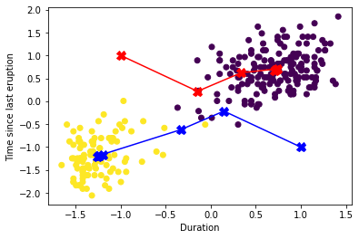
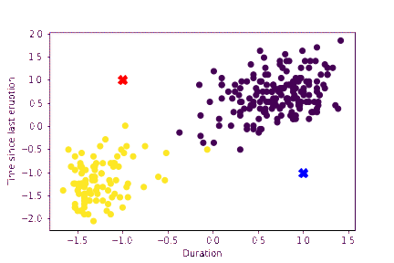
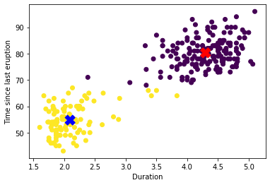
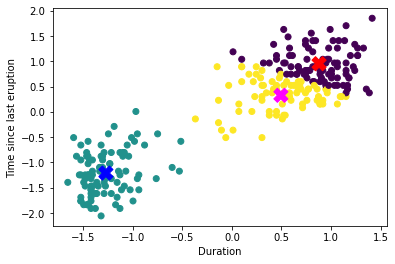
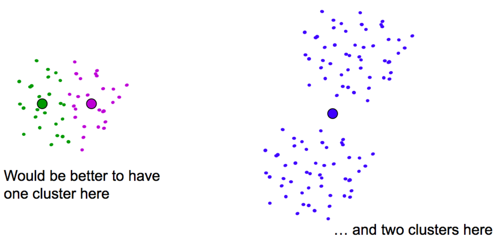

Prototype Clustering¶
It is easier to start describing clustering by its objective. When clustering data, we aim to find subsets of observations that are similar to one another, while being different from observations in other sets.
Whether the groups occur naturally in feature space, or we are imposing some partition, a primal concern is how to measure similarity and dissimilarity among observations. We have already discussed several measures of similarly and dissimilarity before in the course. When we now refer to a (dis)similarity measure, we may refer to an arbitrary measure of the one discusses if none is specified. Most algorithms take a dissimilarity or distance matrix as their input.
Since clustering algorithms define groups by similarity, different metrics will result in different clusters. The metric needs to be chosen with the nature of the data in mind, and the many options provide a degree of flexibility to many algorithms, allowing us to adapt them for different types of data. In fact, choosing an appropriate dissimilarity measure is crucial and sometimes more important than the clustering algorithm itself. For example, for mixed data types, or for numerical variables with different scale, the weighted dissimilarity can be used
where \(d_l\) is the dissimilarity for feature \(l\). The weight \(w_l\) sets the influence of feature \(l\) in the overall dissimilarity between observations as follows. Consider the mean dissimilarity
where
is the mean dissimilarity for feature \(l\). If we want the overall contributions for all features to be the same, we can choose \(w_l = 1/\bar{d}_l\) (note not all weights are the same in this case). For numerical variables and using the 2-norm, \(\bar{d}_l = 2\sigma^2_l\), and the relative importance of each feature is proportional to its variance. Standardizing the data set is akin to make \(w_l=1/2\sigma^2_l\), and gives all features equal importance. This is often recommended, but not always works well. Sometimes some features have naturally more discriminative power for clustering, and should be weighted more. Consider the following example:
Fig. 21 Simulated data: on the left, K-means clustering (with K=2) has been applied to the raw data. The two colors indicate the cluster memberships. On the right, the features were first standardized before clustering. This is equivalent to using feature weights \(1/[2 · var(X_j)]\). The standardization has obscured the two well-separated groups. Note that each plot uses the same units in the horizontal and vertical axes. Source: [1], p.506¶
The first type of clustering we consider is prototype clustering, in which each cluster is represented by a prototype. All members of the cluster are supposed to be derived (noisy) versions of their prototype, with the prototype possessing the aggregated, or more important characteristics of the cluster members. For given clusters, one way of estimating such prototypes is to average all observations belonging to each cluster, resulting in cluster centroids as prototypes.
Prerequisites¶
When dealing with hard cluster assignments (non-probabilistic), each observation is assigned to a single cluster. Let \(K\) be the number of clusters. This assignment can be encoded with a vector \(C\) of length \(n\) (# of observations), with each entry \(C_i=k\), with \(k = 1,\ldots,K\) an integer denoting the membership of observation \(i\).
The objective is to find the best partition \(C^{*}\) that results in clusters with small within dissimilarity (similar observations in the same cluster) and large between cluster dissimilarity. One way to specify this objective is through a loss function that explicitly measures such dissimilarities.
Consider the total point “scatter” \(T\), the sum of all pair distances in the data set. \(T\) can be decomposed as follows,
where \(W(C)\) is the within cluster scatter, and \(B(C)\) is the between cluster scatter. A good partition can be either found by minimizing \(W(C)\), which sums up dissimilarities within each cluster, or, equivalently, by maximizing \(B(C)\), which sums up dissimilarities between different clusters. All keeping \(T\), constant.
As a loss function the within cluster point scatter
works well.
A naive way to try to minimize \(W(C)\) is to test all possible partitions \(C\) of \(K\) clusters and keep the best one. We did something like this when discussing the Fisher-Jenks discretization in 1D, but while the FJ discretization takes advantage of continuity of the partitions, in more dimensions, we need to perform an extensive search.
The number of possible partitions are given by the Stirling numbers of the Second kind,
which results in a combinatorial explosion even for moderate values of \(N\) and \(K\).
from math import comb, factorial
def S(N, K):
s = 0
for k in range(1, K+1):
s += (-1)**(K - k) * comb(K, k) * k**N
return s//factorial(K)
print(f'S(10, 4) = {S(10, 4)}')
print(f'S(19, 4) = {S(19, 4):.4e}')
print(f'S(100, 4) = {S(100, 4):.4e}')
S(10, 4) = 34105
S(19, 4) = 1.1260e+10
S(100, 4) = 6.6956e+58
So, a brute force search is impractical. One option is a greedy search, or greedy descent of the loss function. This kind of iterative algorithms decrease the value of the loss function at each step and are guaranteed to find a local minima by exploring a reduced subset of partitions. Their local nature makes them susceptible to starting conditions and the local minimum found may be far from the global minimum. The most popular clustering algorithm of this type is by far the K-means algorithm described next.
K-Means¶
K-means clustering is prototype or partition clustering algorithm designed for numerical variables. The dissimilarity metric used in K-means is the squared euclidean distance, for which \(W(C)\) becomes
where \(N_k\) is the number of elements in cluster \(k\) and \(\bar{x}_k = \frac{1}{N_k}\sum_{C_i=k} x_i\) is the mean vector of observations assigned to cluster \(k\).
Exercise: Prove the above equality.
Here each \(\bar{x}_k\) is a cluster centroid, and acts as the cluster prototype or representative. Minimizing \(W(C)\) is achieved by finding an assignment that minimizes the mean distance of points to its prototype within each cluster. Under this condition, each point is assigned to the centroid that is closer to it, defining a partition of space called the Voronoi tesselation.
K-means solves the minimization problem
by splitting the problem into two convex problems with an easy solution. Consider first the expanded problem of finding the partition and the centroids.
We now perform an iterative optimization on the two sets of variables. For fixed centroids, finding the partition is easy, as we assign each point to its closest centroid. For a fixed partition, the solution for the centroids is given by the mean of all points of each partition,
Exercise: Give proof for the solution of each component of the biconvex problem given above.
Iterating this steps always reduces the loss function \(W(C)\), converging in a local minimum. Since the local minimum may be suboptimal, it is recommended to repeat the K-mean algorithm with different starting conditions and keep the best partition.
The K-means algorithm is as follows:
Randomly choose initial centroids \(\{\mu_k\} \subset X\).
Repeat until convergence:
\(C_i = \mathop{\mathrm{argmin}}_{j} |x_i - \mu_j|^2\)
\(\mu_k = \bar{x_k}\)
You will implement K-means in the assignment, for the examples in the notes we’ll use the implementation in SciKit-Learn.
K-means++¶
K-mean++ is a way to initialize the K-means algorithm in a smarter way, as to keep the initialization points far from each other.
To perform the initialization, first choose one initial centroid at random among the observations in \(X\). Then, for the remaining centroids, choose the next centroid among the remaining points in \(X\) with probability proportional to the squared distance from the nearest centroid.
K-means++ guarantees that
Example: Clustering Old-faithful data¶
We’ll use the classic Old Faithful data set. The data set comprises 272 observations, each of which represents a single eruption and contains two variables corresponding to the duration in minutes of the eruption, and the time until the next eruption, also in minutes. The data set seems to be composed of two clusters. We will first standardize the data, as its useful for this data set, but remember the discussion above.
from sklearn.cluster import KMeans
from sklearn.preprocessing import StandardScaler
import matplotlib.pyplot as plt
X = np.loadtxt('Data/old-faithful.csv', delimiter=',')
Xs = StandardScaler().fit_transform(X)
random_state = 170
model = KMeans(n_clusters=2, random_state=random_state)
y = model.fit_predict(Xs)
centroids = model.cluster_centers_
plt.xlabel('Duration')
plt.ylabel('Time since last eruption')
plt.scatter(Xs[:,0], Xs[:,1], c=y)
plt.scatter(centroids[:,0], centroids[:,1], c=('red','blue'), marker='X', s=200);

Let’s try to visualize the process
from celluloid import Camera
fig = plt.figure()
camera = Camera(fig)
c1 = [ [-1, 1] ]
c2 = [ [1, -1] ]
plt.xlabel('Duration')
plt.ylabel('Time since last eruption')
plt.scatter(Xs[:,0], Xs[:,1], c=y)
c1a = np.array(c1)
c2a = np.array(c2)
plt.plot(c1a[:, 0], c1a[:, 1], 'X-', c='red', ms=10)
plt.plot(c2a[:, 0], c2a[:, 1], 'X-', c='blue', ms=10)
camera.snap()
for i in range(1, 7):
random_state = 170
model = KMeans(n_clusters=2, random_state=random_state,
n_init= 1, max_iter=i,
init=np.array([[-1, 1],[1,-1]]))
y = model.fit_predict(Xs)
c1.append(list(model.cluster_centers_[0]))
c2.append(list(model.cluster_centers_[1]))
plt.xlabel('Duration')
plt.ylabel('Time since last eruption')
plt.scatter(Xs[:,0], Xs[:,1], c=y)
c1a = np.array(c1)
c2a = np.array(c2)
plt.plot(c1a[:, 0], c1a[:, 1], 'X-', c='red', ms=10)
plt.plot(c2a[:, 0], c2a[:, 1], 'X-', c='blue', ms=10)
camera.snap()
animation = camera.animate()
animation.save('Figures/kmeans.gif')


Note that without standardizing Time dominates the distance metric.

What if we chose the number of clusters wrong? We still find a partition that minimizes the scatter, bit it may be misleading.
model = KMeans(n_clusters=3, random_state=random_state)
y = model.fit_predict(Xs)
centroids = model.cluster_centers_
plt.xlabel('Duration')
plt.ylabel('Time since last eruption')
plt.scatter(Xs[:,0], Xs[:,1], c=y)
plt.scatter(centroids[:,0], centroids[:,1], c=('red','blue', 'magenta'), marker='X', s=200);

Example: Bad local minimum¶
The following example illustrates a bad local minimum for 3 clusters. The example is taken from the slides of David S. Rosenberg.

Application: Vector Quantization and Compression¶
K-medoids¶
A modification of K-means that can be used with categorical data and is more robust to outliers, since it allows for distance metrics different than squared euclidean, is K-medoids.
The K-medoids replaces the calculation of centroids in the K-means algorithm, which is the only step that assumes squared distaces. Instead of calculating the centroids as the mean of points in a cluster, the centroids are now required to be one instance of the cluster members. This is, the prototype of the cluster is now one the points in the cluster. The point chosen as prototype is the one the minimizes the distances from it to all other points in the cluster. In fact, since centroids are not computed, the K-medoids algorithm can be written in a way that only needs as input the dissimilarity matrix \(D\), instead of the data matrix \(X\). The algorithm is:
Randomly choose initial centroids \(\{\mu_k\} \subset X\).
Repeat until convergence:
\(C_i = \mathop{\mathrm{argmin}}_{j} D(x_i, \mu_j)\)
\(\mu_k = x_{i^*_k}\), where \(i_k^{*} = \mathop{\mathrm{argmin}}_{i:C_i=k}\sum_{C_j=k} D(x_i,x_j)\)
This advantages come at a cost. The computational complexity of K-medoids is \(O(N^2)\) on step 2, in contrast to \(O(KN)\) as in K-means. Step 1, being the same as in K-means, is of order \(O(KN)\). So, K-medoids is computationally more expensive than K-means.
There are other optimization algorithms for K-medoids, for example, the PAM algorithm works as follows: PAM method works by computing the cost of swapping a medoid with any non-medoid point. Then, make the swap that decreases the cost the most. Repeating the swapping until convergence.
You will implement K-medoids in the assignment.